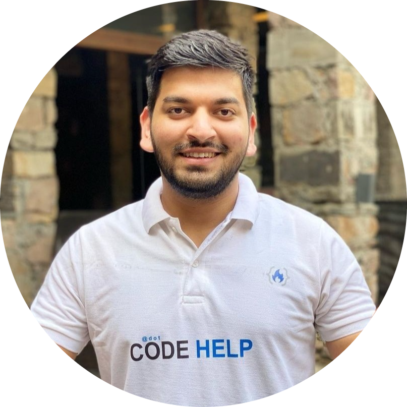

|  |
Introduction :-Love Babbar is the Founder of CodeHelp and a former Software Engineer at Amazon and Microsoft. He graduated from Netaji Subhash Institute of technology with an information technology stream in bachelor's of engineering. |
He is founder of CodeHelp in which he teaches like DSA,Web development course in which many student learn and he is playing important role in the terms of placement,interview ,get dream job ,enhanced skill of thousands of student
Schooling :- A.E.S N.T Rama Rao Memorial Senior Sec. SchoolA.E.S N.T Rama Rao Memorial Senior Sec. School
2013 - 2015
Collage:-Netaji Subhas Institute of TechnologyNetaji Subhas Institute of Technology
B.E, Information TechnologyB.E, Information Technology
2015 - 2019
Service Selection Board(Recommendation letter for Officer entry in Indian Army)Service Selection Board(Recommendation letter for Officer entry in Indian Army) Issued by Indian army · Feb 2016Issued by Indian army · Feb 2016 This letter can be considered as an evidence for the confirmation of the Officer like qualities present in an individual . A candidate is interviewed for 5 days and different officials from the defence forces examines his personality by putting him under different situations. There is a lot of competition in this process , as a high number of candidates appears for this process, but only a few of them makes it to the merit list . I am happy to say that , I am one of those recommended candidates. This confirmation letter reveals that I am capable of leading a team efficiently, capable of mixing up with new people and can handle the situation tactfully.